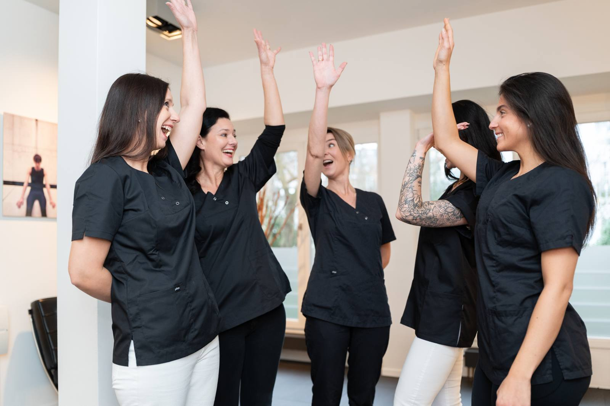
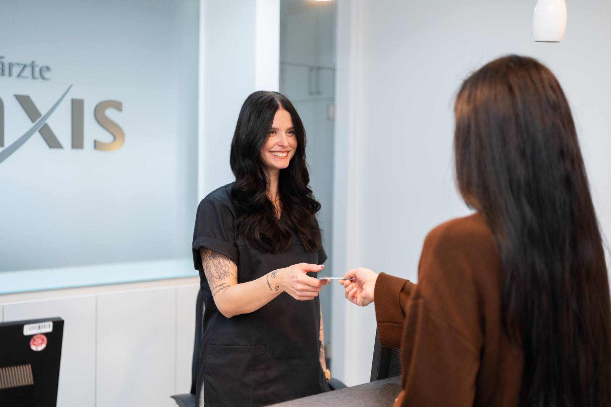
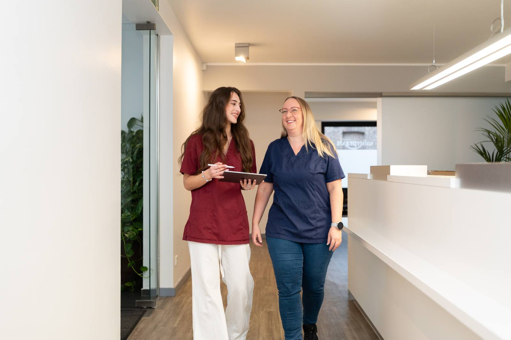

Düsseldorf
Achillesstraße 19 · 40545 Düsseldorf
Mo–Do 8–20 Uhr · Fr 8–19 Uhr · Sa 9–13 Uhr
Die Salierpraxis ist eine Zahnarztpraxis mit zwei Standorten in Düsseldorf-Oberkassel und Kempen am Niederrhein: Ein eingespieltes Team aus fünf Zahnärztinnen und Zahnärzten behandelt Sie hier von der Vorsorge über Implantate bis zum kompletten Zahnersatz. Gesunde Zähne sind dabei mehr als ein schönes Lächeln – sie sind ein wichtiger Teil Ihrer Gesundheit. Wir nehmen uns Zeit, erklären verständlich und finden gemeinsam mit Ihnen die Behandlung, die zu Ihnen passt.

Achillesstraße 19 · 40545 Düsseldorf
Mo–Do 8–20 Uhr · Fr 8–19 Uhr · Sa 9–13 Uhr
Oelstraße 6 · 47906 Kempen
Mo–Fr 8–18 Uhr
Intraoral-Scanner für den kontaktfreien Zahnabdruck – gescannt statt abgeformt, in rund einer Minute
Von der Vorsorge bis zum kompletten Zahnersatz: Wir behandeln Sie mit modernen, schonenden Methoden — auf Wunsch mit Lachgas oder in Vollnarkose.

An beiden Standorten erwartet Sie das komplette Leistungsspektrum – von der professionellen Zahnreinigung über Implantate bis zum Zahnersatz aus dem Meisterlabor.

Achillesstraße 19 · 40545 Düsseldorf
Mo–Do 8:00–20:00 Uhr · Fr 8:00–19:00 Uhr · Sa 9:00–13:00 Uhr

Telefonisch unter 0211 – 550 24 80 (Düsseldorf) oder 02152 – 51 01 46 (Kempen) – wir nehmen uns Zeit für Sie.
Termin vereinbaren